Happy Birthday,
Nadoshty
Hi👋
إيه الاخبار؟ طمنيني عليكي، يارب دايما تكونى بخير💗 بقولك إيه، هو إنتِ بجد فاكرة إني نسيت عيد ميلادك؟ 😂 عارفة إني ممكن أكون مبيّنة لك إني ناسية، ومش فاكرة لا يوم ولا تاريخ، بس الحقيقة إن فيه حاجات مينفعش تتنسي، وإنتِ واحدة من الحاجات دي. بس المرة دي مكنتش عايزة أقولك كل سنة وإنتِ طيبة وخلاص… كنت عايزة أعمل لك حاجة تليق بيكي وبمكانتك عندي🥹 🤎 بقولك اى اى رئيك فى الصوره دى 🌚 هقولك انا الصورة دي ملهاش لازمة خالص، بس قولت أحطها يعني… مش كل حاجة لازم يبقى ليها سبب عادى 😂😂
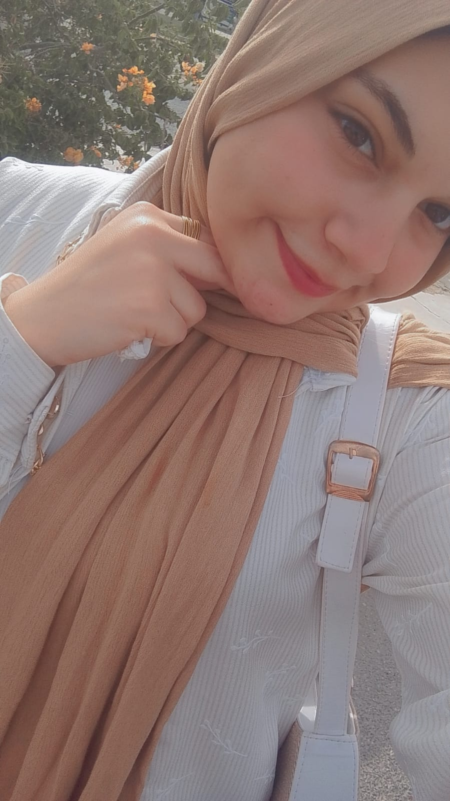
Our Story
Every moment we share becomes a memory. It holds close forever.
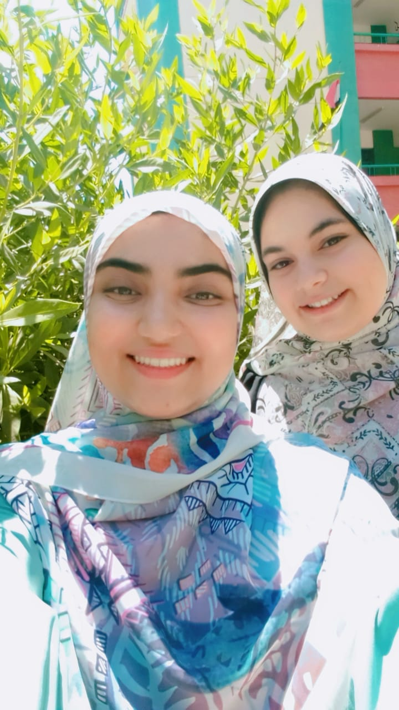
1
أول صورة لينا دي أول صورة اتصورتها أنا وإنتي فعلًا. كنا في المدرسة بنودي ورق عشان استمارة تالتة ثانوي، ومكنّاش نعرف وقتها إن الصورة دي هتبقى بداية لكل اللي إحنا فيه دلوقتي. فاكرة إني وقتها كنت خايفة أوي… كنت خايفة إننا نبقى مجرد ذكرى حلوة من أيام المدرسة، وإن بعد ما نخلص امتحانات الثانوية العامة، كل واحدة تروح لحالها، وبعد شهر أو شهرين أو حتى سنة، كل واحدة تنشغل في حياتها وننسى بعض. بس الحمدلله حصل عكس كل اللي كنت خايفة منه. من غير ما نحس، قربنا من بعض أكتر وأكتر، لحد ما بقينا أقرب اتنين لبعض. ❤️ وبقيتي أقرب واحدة لقلبي، والوحيدة اللي بقدر أجري عليها في أي وقت، من غير ما أفكر حتى. لو عاملة مشكلة، أو عملت حاجة غلط، أو مخنوقة، زعلانة، مضايقة، أو حتى فرحانة… أول واحدة بكون عايزة أحكيلها وأجري عليها هي إنتي. بجد أنا ببقى بقول لنفسي: يا بختي بيكي، ويا بختي إن ربنا جمعني بيكي. وبحمد ربنا كل يوم إنه خلانا نحب بعض ونقرب من بعض بالشكل ده، من غير ما حتى نحس إمتى حصل ده. والأجمل إن ده كله حصل رغم إني في البداية كنت أصلًا رافضة فكرة إني أبقى صاحبة حد أو أعمل صحاب. 😂 بس الحمدلله إن ربنا شال الفكرة دي من دماغي، وجمعنا ببعض، وخلانا نكون أصحاب ونحب بعض بالشكل ده. مكنّاش عارفين إن الصورة دي هتبقى أول صورة في حكاية كبيرة أوي بينا. بس الحمدلله إنها كانت البداية. ❤️
Our Story
Every moment we share becomes a memory. It holds close forever.
2
وأهو بعد ما خلصنا الثانوية العامة، بدأت مرحلة جديدة من حياتنا، ومن أحلى الحاجات فيها إننا كنا لسه مع بعض. ❤️ فاكرة أول فرح روحناه سوا؟ يمكن وقتها الموضوع كان بالنسبالنا مجرد خروجة وفرحة حلوة، بس بالنسبة ليا كانت ذكرى جديدة بتتضاف لكل الذكريات اللي بدأت تكبر بينا واحدة واحدة. من أيام المدرسة، والخوف من إن كل واحدة فينا تروح في طريق، لحد ما لقينا نفسنا بنعدّي مرحلة الثانوية ونبدأ نشوف ونعيش حاجات جديدة سوا. وكل مرة كنا بنتقابل فيها، وكل خروجة، وكل ضحكة، وكل موقف صغير، كان بيأكدلي أكتر إن وجودك في حياتي مش مجرد صدفة عابرة. بحب جدًا إن عندي صور وذكريات معاكي ،وأتمنى إن الصورة دي تبقى واحدة من صور كتير أوي جاية، ونفضل كل شوية نفتكرها ونضحك ونقول: فاكرة أول فرح روحناه سوا؟ 😂❤️ ويا رب كل اللي جاي من عمرنا يكون مليان أيام حلوة، وضحك، وخروجات، وذكريات أكتر وأكتر، ونفضل دايمًا جنب بعض مهما اتغيرت الأيام. كل ذكرى معاكي ليها مكان خاص في قلبي، ودي واحدة من الذكريات اللي عمري ما هنسى تفاصيلها. ❤️"
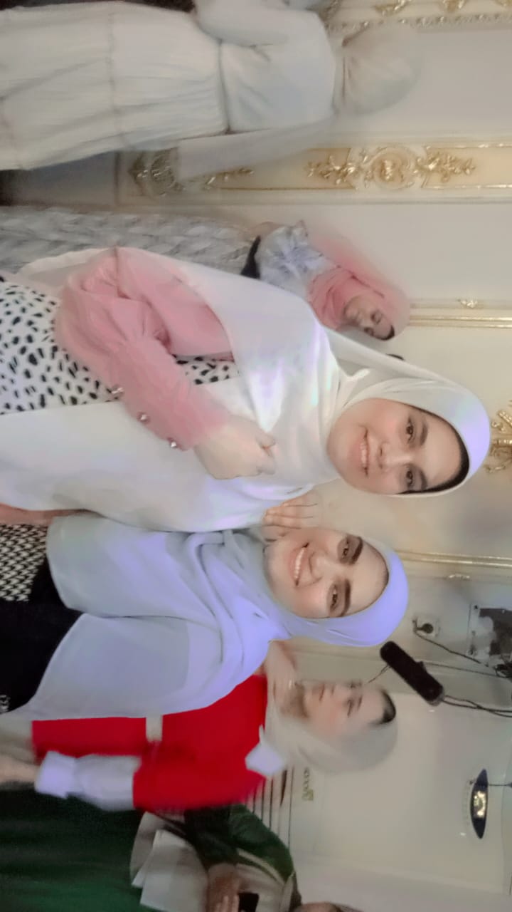
Our Story
Every moment we share becomes a memory. It holds close forever.
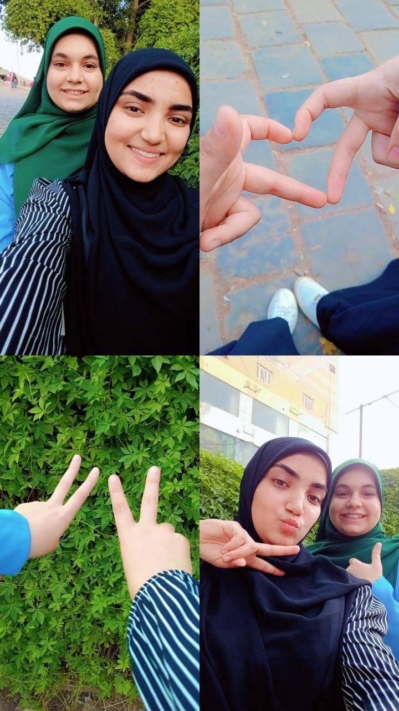
3
.
فاكرة اليوم ده لما نزلنا شبين سوا عشان نتصور للكلية؟ يمكن كان مجرد يوم عادي في نظر أي حد، لكن بالنسبالي كان يوم من الأيام اللي بحب أفتكرها جدًا. ❤️ كنا مش فى احسن حالتنا و وسط كل الزحمة والتفاصيل دي، كنا بنعمل ذكريات جديدة من غير ما نحس. ضحكنا، واتصورنا، واتمشينا سوا، وكل حاجة بسيطة في اليوم ده بقت ليها ذكرى عندي لمجرد إنك كنتي معايا. وأكتر حاجة بحبها في حكايتنا إن الذكريات الحلوة مش لازم تكون في أماكن مميزة أو مناسبات كبيرة… ساعات مجرد مشوار عادي معاكي كلمه حلوه بيبقى من أجمل الأيام اللي أفتكرها بعدين. ويمكن وقتها ماكنّاش عارفين إحنا هنعيش كام موقف تاني سوا، ولا كام صورة هتتجمع بينا، بس أنا مبسوطة جدًا إن كل مرحلة جديدة في حياتي كان فيها جزء منك. وربنا يديمك في حياتي، ويفضل كل مشوار معاكي ذكرى حلوة تستاهل تتحفظ. 🫂🤍"
Our Story
Every moment we share becomes a memory. It holds close forever.
4
أول مرة جيتلك البيت فيها ❤️ يمكن اليوم ده كان بالنسبالك يوم عادي، لكن أنا لسه فاكرة إحساسه وتفاصيله. كان من أول المرات اللي حسيت فيها إن علاقتنا خرجت من خروجات الدروس والدراسه ، وبقى ليا مكان في حياتك وبيتك كمان. من وقتها بدأت أحس إنك مش مجرد واحدة بقضي معاها وقت حلو، إنتِ بقيتي حد بحب أكون موجودة معاه في كل التفاصيل، حتى أبسط التفاصيل اللي ممكن أي حد يعدي عليها من غير ما ياخد باله. يمكن عشان كده بحب الصور اللي زي دي أوي، لأنها مش مجرد صورة… دي بتفكرني بمرحلة كاملة وبإحساس معين مش بيتكرر. ❤️ وأنا فعلًا ممتنة لكل لحظة خلتني أقرب منك، ولكل ذكرى صغيرة بدأت تتحول مع الوقت لحاجة كبيرة أوي في قلبي.🥹🫂
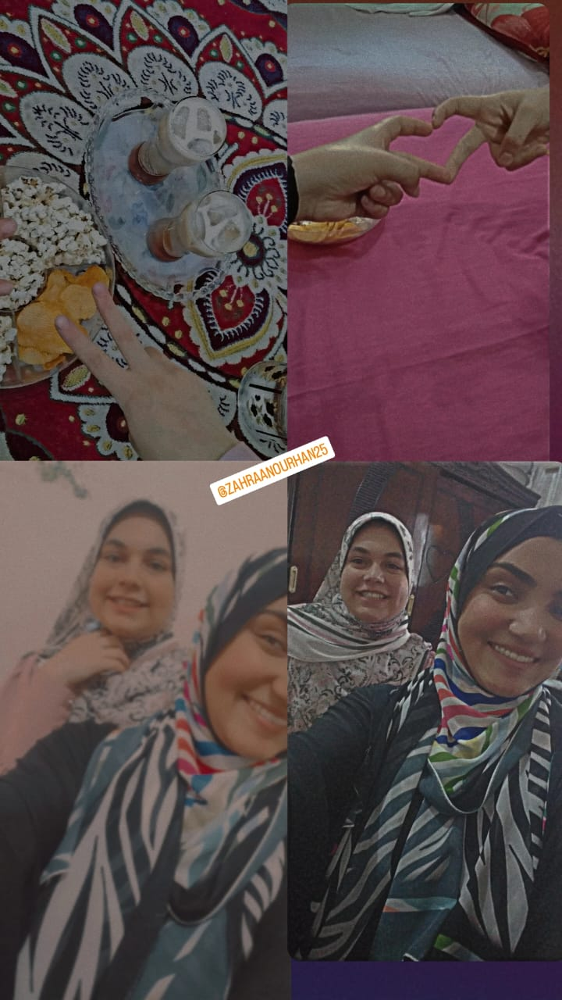
Our Story
Every moment we share becomes a memory. It holds close forever.
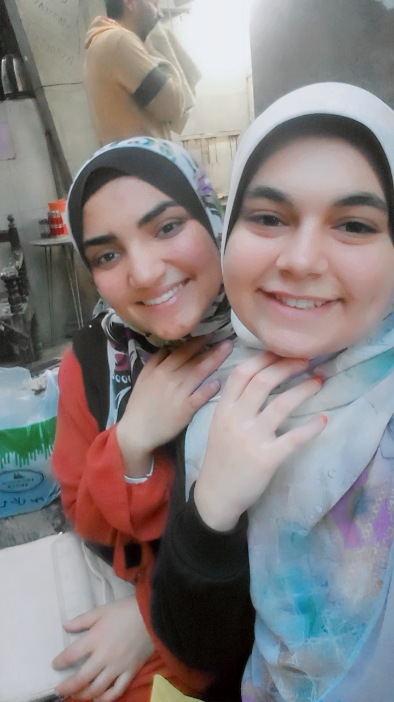
5
وأول شوبينج لينا سوا بقى 😂❤️ من الحاجات اللي ممكن شكلها يكون بسيط جدًا، مجرد إن اتنين نزلوا يشتروا حاجات مع بعض، لكن لما تكوني إنتِ الشخص اللي معايا، حتى أبسط المشاوير فاكرة الضحك والكلام واللف ؟ يمكن مش فاكرة كل تفاصيل اليوم، بس فاكرة الإحساس الحلو اللي كان فيه. كل ما أشوف الصورة دي، افتكر اليوم والذكريات الحلوه اللى فيه والضحك على أي حاجة، وببقى حاسة إن اليوم كان أحلى لمجرد إن كنا مع بعض
Our Story
Every moment we share becomes a memory. It holds close forever.
6
يمكن الآيس كريم كان مجرد حاجة بسيطة بنجيبها بعد درس العربي، بس بالنسبالي كان أكتر من كده بكتير. 🍦❤️ يمكن دى الحاجه الوحيده اللى جمعتنا مع بعض❤️ تقريبًا كل مرة نخلص الدرس العربى كنا لازم نجيب آيس كريم وناكله واحنا ماشيين ، يمكن هو اللي جمعنا في البداية، بس اللي خلّى كل مرة ليها طعم مختلف هو إننا كنا بنعيشها سوا وكانت اجمل ذكريات عيشناها وقتها ويااه على المواقف اللى كانت بتحصل لينا فى الشارع 😂😂 ولحد دلوقتي، كل ما أشوف آيس كريم أفتكر الأيام دي وأفتكرنا إحنا الاتنين وإحنا راجعين من درس العربي، وأقول يوم من ايامها تانى 🤍🍦
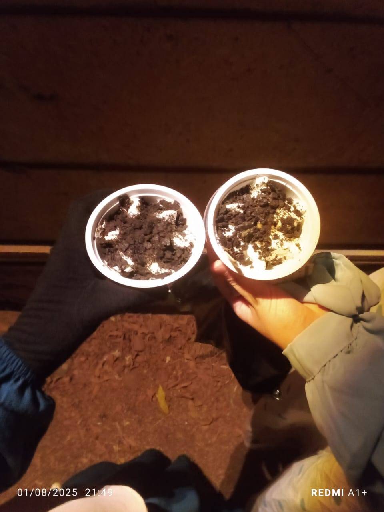
Our Story
Every moment we share becomes a memory. It holds close forever.
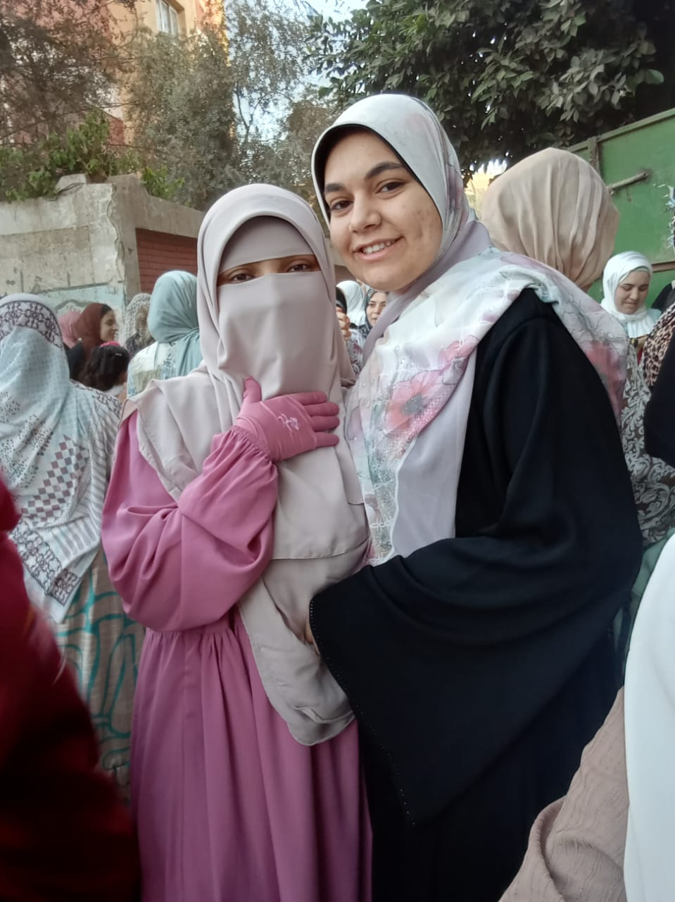
7
اول صوره لينا وانتى بالنقاب كنا في العيد 💗 كان شكلك عسوووول موت🥹💗 عيدنا كان أحلى عشان كنا سوا😚🫂 💗
Our Story
Every moment we share becomes a memory. It holds close forever.
8
كان يوم ميلادى و عمرى بجد ما انساه كان عيد ميلاد ورغم أن اليوم دا كان عندك امتحان فيه إنتِ جيتيلي البيت وشاركتي يوم من الأيام اللي بحبها وأفتكر تفاصيلها زملائه يوم عمرى ما اقدر انساه🥹 وجودك في اليوم ده كان كفاية يخليه مختلف، وأحلى حاجة إننا مع الوقت بقينا بنشارك بعض تفاصيل أكتر وأكتر، حتى الأيام اللي تخص كل واحدة فينا بقت ليها مكان عند التاني❤️ شكرًا إنك كنتِ جزء من يومي، وجزء من فرحتي🫂🫂🫂❤️
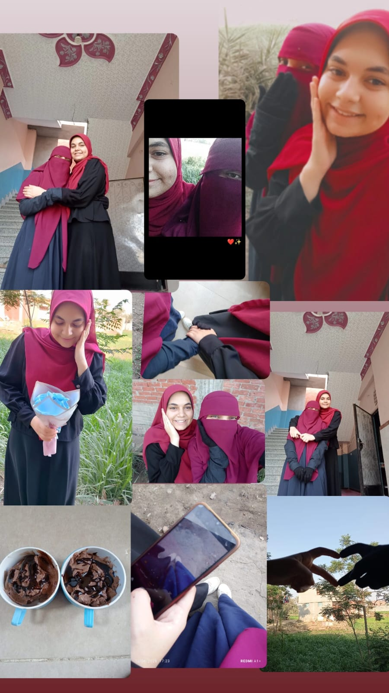
Our Story
Every moment we share becomes a memory. It holds close forever.
9
/h3>
مش محتاجة أتكلم خالص… الفيديو ده بيقول كل اللي جوايا. كل لحظة فيه، وكل ضحكة وكل تفصيلة، بتحكي قد إيه وجودك في حياتي بقى اغلى حاجه حصلتلى فى حياتى كلها ربنا يديمك في حياتي ويديم بينا كل الحب وكل حاجه حلوه 🫂💗
Our Story
Every moment we share becomes a memory. It holds close forever.
10
خطيبي خطيبي 😂😂💍❤️ هموووت بجد 😂😭 المفروض إن النهارده عيد ميلادك، وأنا لحد دلوقتي لسه ماقولتلكيش كل سنة وإنتِ طيبة! كل سنة وإنتِ طيبة يا حبيبت قلب وعيون نور😚🫂🫂، ويا رب السنة الجاية أشوفك بقى مع خطيبك الحقيقي 😂💍❤️ وتكوني لابسة خاتمك بجد😂❤️ ويا رب أشوفك أسعد وأجمل واحدة، وكل اللي نفسك فيه يتحقق قدام عينيك يا عيونى🫂
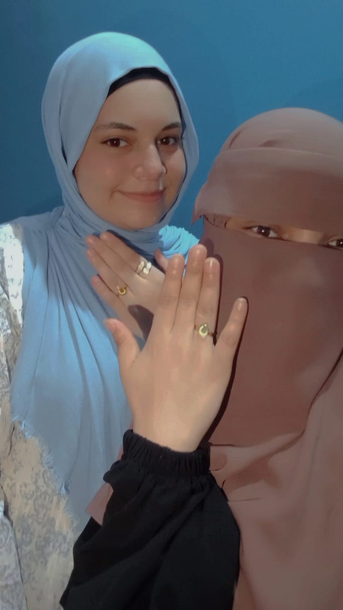
Our Story
Every moment we share becomes a memory. It holds close forever.
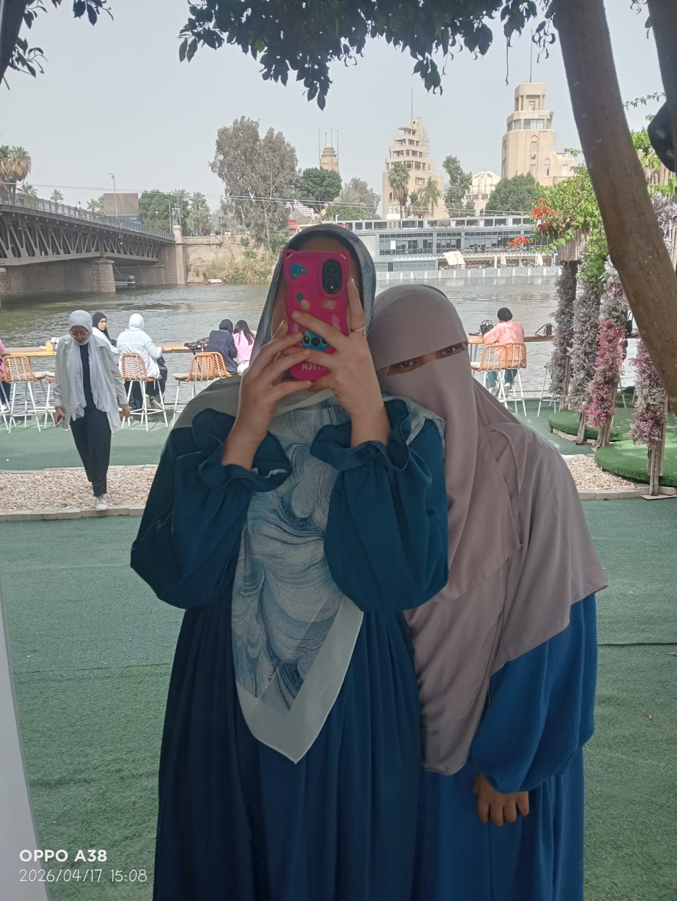
YOUR PHOTO11
كل سنة وانتي طيبة يا حبيبتى، ربنا يخليكي ليا يا روح قلبي، وأفضل دايمًا الكتف اللي تسندي عليه في أي وقت ومن غير ما تفكري حتى 🫂
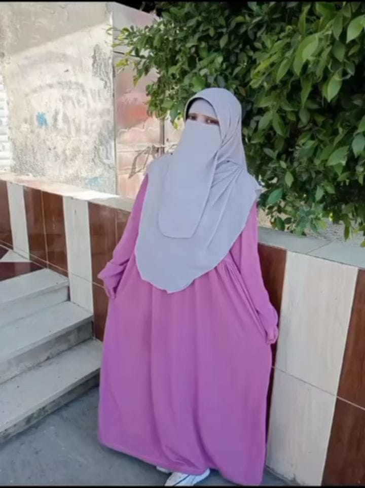
Things I Love About You
A letter from my heart.
TAP THE ENVELOPE TO OPEN
كل سنة وإنتي طيبة يا أحلى ندوشه واحلى واحده فى حياتى 🥹، بجد مش عارفة أقولك اى غير قد إيه أنا مبسوطة إنك في حياتي. إنتي من اكتر الناس اللي وجودهم بيخلّي أي حاجة حلوه فى يومى وحياتى ، وبحب ضحكتك وكلامنا سوا ومن أكتر الحاجات اللي بحبها. أتمنى السنة دي تكون حلوة عليكي وتحققي فيها كل اللي نفسك فيه، وتفضلي دايمًا مبسوطة ومطمنة. ربنا يخليكي ليا يا حبيبت قلبى ونفضل مع بعض دايما و نعمل ذكريات ونهزر ونضحك على كل حاجة زي ما إحنا. بحبك أوي ي ندوشتى🫂💗
أتمنى دايمًا تفضلي مبسوطة،
وتحققي كل اللي نفسك فيه،
وتفضلي أجمل حاجة في حياتي.
دوسي و شوفي المفاجأة بتاعتك
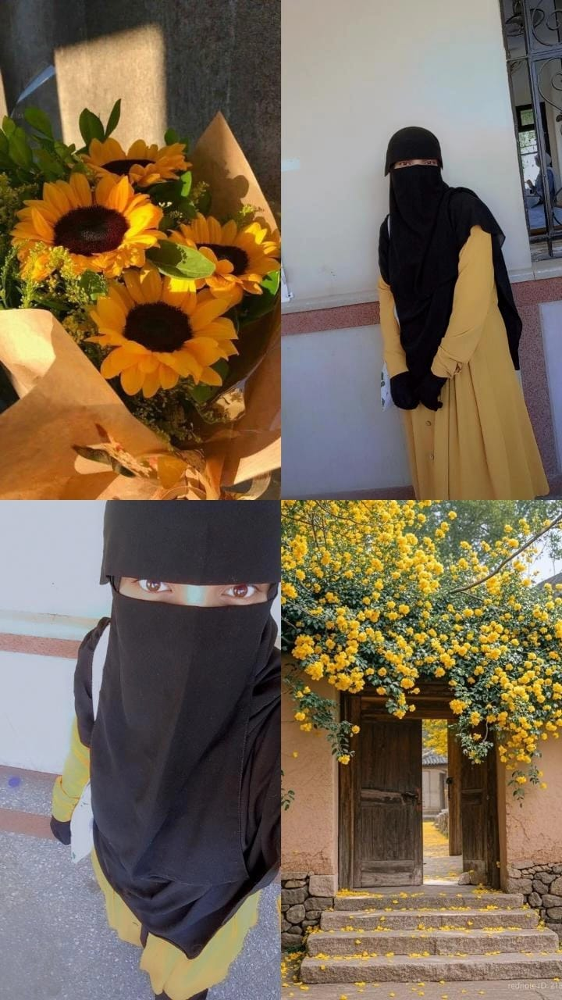